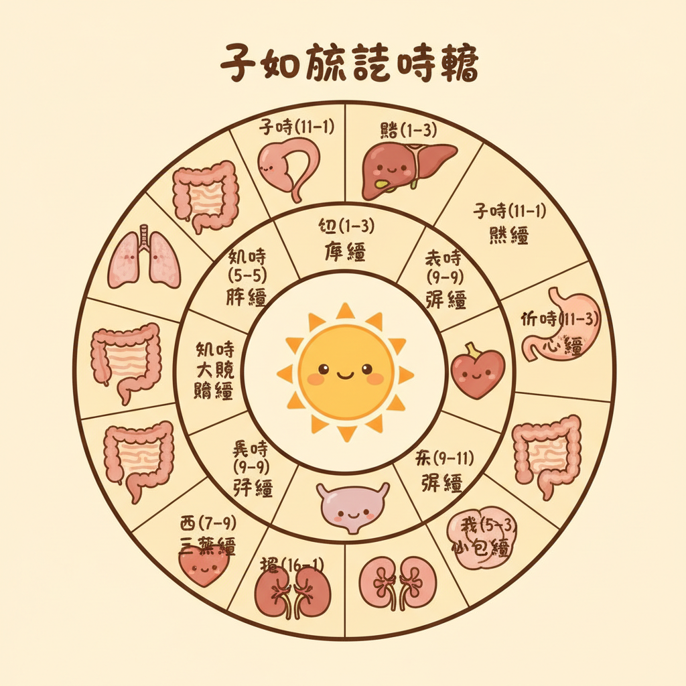
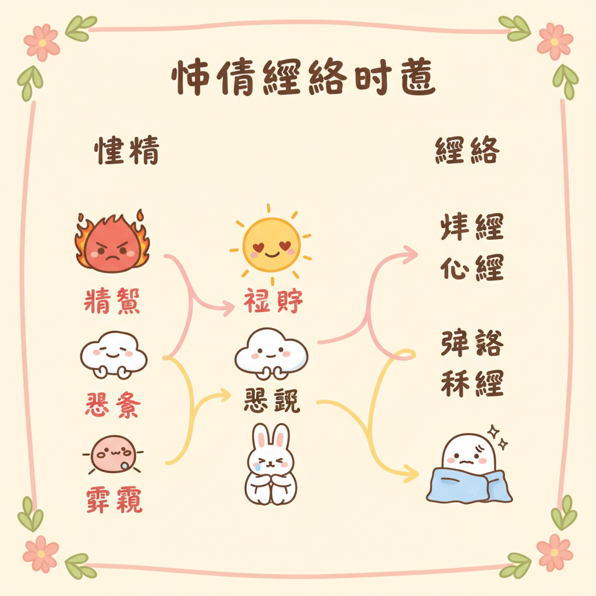

本頁導覽
什麼是經絡
子午流注 — 身體的時刻表
十四經絡個論
經絡 × 情緒 × 精油 三角對照
日常覺察練習
半夜醒來的時間在跟你說話
辦公室經絡急救 3 穴
什麼是經絡（簡單版）
先別急著想像什麼「看不見的能量線」。換個方式想：你的身體裡有一套通訊系統，比 Wi-Fi 還老，比電話線還可靠。它從頭頂到腳底、從胸腔到指尖，佈了 14 條主幹道，串起 361 個節點。中醫管這套系統叫「經絡」，管那些節點叫「穴位」。
你大概有過這種經驗：右肩痠了一整天，結果傍晚開始偏頭痛。或者連續失眠幾晚，皮膚就開始冒痘。這不是巧合。膀胱經從頭頂一路走到小指，肺經管呼吸也管皮膚。一條路堵了，它負責的區域全部會收到通知。
科學怎麼看經絡？
世界衛生組織（WHO）在 1991 年統一制訂了 361 個穴位的標準定位，2006 年出版西太平洋版穴位國際命名標準，2014 年再次修訂。這代表經絡不只是古人的想像，全球醫學界花了幾十年去量化、定位、反覆驗證這些節點。
現代研究提出幾個解釋。一個是「筋膜連續體假說」：全身的筋膜像一件連身衣，經絡走的路線，剛好跟筋膜的張力傳導路線高度重疊。另一個是生物電特性，穴位區域的皮膚電阻比周圍低，電流傳導率更高，等於身體在這些點上多裝了「天線」。
參考：Langevin HM, Yandow JA (2002). Relationship of acupuncture points and meridians to connective tissue planes. The Anatomical Record , 269(6), 257-265. / Ahn AC et al. (2008). Electrical properties of acupuncture points and meridians. Bioelectromagnetics , 29(4), 245-256.
你不需要「相信」經絡。你只需要注意：下次肩膀痠的時候，去按一下手上的合谷穴，痠的那一側會不會鬆一點。身體會自己告訴你答案。
子午流注 — 你的身體有自己的時刻表

2017 年諾貝爾生理醫學獎頒給了三位美國科學家，他們發現了控制晝夜節律的分子機制，原來我們體內真的有一套「生理時鐘基因」在跑。中醫兩千年前就觀察到類似的現象，只是用了不同的語言：子午流注。
概念很簡單。一天 24 小時分成 12 個時辰，每個時辰有一條經絡特別活躍，像是輪到它「值班」。這不是什麼神祕力量，就是身體的維修排程表。凌晨三點肺經值班，所以氣喘的人那個時間最容易發作。早上七到九點胃經當班，所以那段時間吃早餐消化最好。
如果你每天固定在某個時間不舒服，凌晨三點醒來、下午三點特別累、晚上九點開始焦躁，先看看那個時段是哪條經絡在值班。這不是鬼，是你的身體在跟你報告今天的狀況。
時辰
時間
經絡
臟腑
身體在做什麼
建議
精油
寅時
03-05
肺經
肺
深層排毒、分配第一口氣到全身
醒了就做幾個深呼吸，不要滑手機
尤加利、薄荷
卯時
05-07
大腸經
大腸
排便黃金時段，清除昨天的廢物
起床喝一杯溫水，別急著出門
檸檬、薑
辰時
07-09
胃經
胃
消化吸收最強的時段
認真吃早餐，吃飽吃好
甜橙、薄荷
巳時
09-11
脾經
脾
運化水穀、思考力最集中
處理最重要的事，腦袋最清楚
檸檬香茅
午時
11-13
心經
心
陽氣最旺，心臟供血最旺盛
午休 15 分鐘就好，不要超過半小時
薰衣草、依蘭
未時
13-15
小腸經
小腸
分清濁，把營養和廢物分開
不適合吃大餐，輕食就好
佛手柑
申時
15-17
膀胱經
膀胱
代謝排毒、排出多餘水分
多喝水，讓身體好好排
杜松、絲柏
酉時
17-19
腎經
腎
儲存精氣、補充生命力
放慢節奏，不要再拼命了
雪松、檀香
戌時
19-21
心包經
心包
保護心臟、情緒安頓
陪家人、散步、做讓心情好的事
玫瑰、天竺葵
亥時
21-23
三焦經
三焦
免疫修復、全身系統重新校準
準備睡覺，遠離藍光
薰衣草、乳香
子時
23-01
膽經
膽
膽汁分泌、決斷力重置
必須睡著，不然隔天猶豫不決
洋甘菊
丑時
01-03
肝經
肝
藏血解毒、情緒淨化
熟睡中，精油白天用就好
薄荷、迷迭香（白天用）
參考：Hall JC et al. (2017). 諾貝爾生理醫學獎：晝夜節律的分子機制。/ 《黃帝內經．靈樞．營衛生會篇》子午流注原文。/ Smolensky MH, Peppas NA (2007). Chronobiology, drug delivery, and chronotherapeutics. Advanced Drug Delivery Reviews , 59(9-10), 828-851.
你半夜醒來的時間在跟你說話
有沒有過那種經驗？明明很累，卻在某個固定時間突然醒來，看一眼手機，凌晨兩點十五分。隔天又是，再隔天還是。你開始懷疑是不是房間有什麼問題，或者最近壓力太大。
子午流注的邏輯其實很簡單：你在哪個時段醒來，就去看那個時段對應的經絡。不是說經絡「叫醒」你，而是那條經絡對應的臟腑功能正在高峰運作，如果有狀況，身體會用最直接的方式通知你，把你叫醒。
01:00 - 03:00
肝經時段 — 你在壓抑什麼？
凌晨一到三點是肝經當值。肝在中醫裡主「疏泄」，白話說就是讓情緒和氣血流動順暢。如果你固定在這個時段醒來，先問自己兩個問題：
最近有沒有在壓抑什麼情緒？憤怒、委屈、不甘心，明明很在意卻假裝不在意的那種。肝最怕的就是「悶住」。
最近有沒有喝太多酒？肝臟在這個時段進行解毒工作，酒精代謝的負擔會直接把你叫醒。
試試看：睡前把那件一直想說但沒說出口的事寫在紙上。不用給任何人看，寫完就好。肝需要的是「流動」，文字也是一種出口。
03:00 - 05:00
肺經時段 — 你在悲傷什麼？
凌晨三到五點是肺經當值。肺在中醫裡對應的情緒是「悲」和「憂」。如果你總在這個時段醒來，而且醒來的時候會莫名想哭或者覺得胸口悶悶的：
留意呼吸道的狀況。過敏、鼻塞、氣喘在這個時段容易發作，因為肺經正在高峰。
問問自己最近有沒有在為什麼事情難過。不一定是大事，有時候只是某個人的一句話，或者一個讓你失望的結果。那份悲傷可能白天被你推開了，但凌晨三點它回來找你。
試試看：醒來的時候不要馬上拿手機。做三次深呼吸，吸到最飽，吐到最乾淨。讓肺做它該做的事，把舊的排出去，把新的吸進來。
05:00 - 07:00
大腸經時段 — 這是正常的
清晨五到七點是大腸經當值。如果你在這個時段醒來，恭喜，你的身體節奏是正常的。這本來就是排毒和排泄的最佳時段，古人管這個叫「卯時」，很多人會自然在這個時段有便意。
醒來去上廁所就對了，不要硬撐著繼續睡。大腸經在工作，順著它來。
喝一杯溫水，幫助腸道蠕動。不需要是蜂蜜水或檸檬水，就是普通溫水。
如果你在這個時段醒來卻沒有便意，而且長期便秘，那可能要回頭看看飲食和水分攝取。大腸經說：我準備好了，但你得給我東西排。
如果固定在同一個時間醒來超過兩週，去看醫生。經絡是身體的參考座標，不是診斷工具。半夜醒來可能是睡眠呼吸中止症、胃食道逆流、焦慮症或其他需要專業處理的狀況。身體在說話，你該做的是認真聽，然後交給能處理的人。
十四經絡個論
點開每條經絡，看它走哪裡、管什麼、堵了會怎樣、怎麼自己處理。
LU
手太陰肺經 Lung Meridian
悲傷
路線 從胸口（中府穴）出發，沿著手臂內側走到大拇指指尖（少商穴），共 11 穴。
管什麼 呼吸、皮膚、免疫第一道防線。情緒上對應悲傷和哀慟，長期壓抑的悲傷會讓呼吸變淺，皮膚變差。
關鍵穴位 中府（LU1，鎖骨下方，咳嗽胸悶按這裡）、尺澤（LU5，手肘彎內側，清肺熱）、列缺（LU7，手腕上方兩指，頭痛咳嗽的萬用穴）、少商（LU11，大拇指指甲旁，急性咽喉痛放血穴）
堵了會怎樣 反覆感冒、皮膚乾癢、凌晨 3-5 點咳醒、鼻塞、講話有氣無力、莫名想哭
精油推薦 尤加利（暢通呼吸道）、乳香（深層呼吸，安撫悲傷）、茶樹（提升免疫力）
自我照顧：早上起來做 5 次深長的腹式呼吸。吸的時候用鼻子，肚子脹起來；吐的時候用嘴巴，慢慢吐乾淨。這不只是呼吸練習，是在幫肺經暖機。
LI
手陽明大腸經 Large Intestine Meridian
放下
路線 從食指指尖（商陽穴）沿手臂外側上行，經肩膀到鼻翼旁（迎香穴），共 20 穴。
管什麼 排泄、淨化、代謝廢物。情緒上對應「放不下」，有些東西早該排出去了，你偏偏抓著。
關鍵穴位 合谷（LI4，虎口處，止痛之王，頭痛牙痛先按這裡）、曲池（LI11，手肘彎外側，清熱排毒）、迎香（LI20，鼻翼兩旁，鼻塞就按它）
堵了會怎樣 便秘或腹瀉、皮膚粗糙暗沉、牙齦腫痛、肩膀前側僵硬、思緒混亂放不下舊事
精油推薦 檸檬（淨化排毒，清新感讓你想「清理」）、薄荷（促進腸蠕動）、甜橙（化解思緒糾結）
自我照顧：頭痛的時候，用另一隻手的大拇指按住合谷穴（虎口肌肉最鼓的地方），按到有痠脹感，維持 1-2 分鐘。痛的那一側特別有感。
ST
足陽明胃經 Stomach Meridian
焦慮
路線 從眼睛下方（承泣穴）開始，經臉頰、胸腹前側，一路下到第二腳趾（厲兌穴），共 45 穴。是十二經絡中穴位最多的一條。
管什麼 消化吸收、接收營養（食物和想法都算）。情緒上對應焦慮和過度思慮，想太多的人胃都不好，不是巧合。
關鍵穴位 四白（ST2，眼眶下，眼疲勞黑眼圈）、天樞（ST25，肚臍旁兩指，便秘腹瀉雙向調節）、足三里（ST36，膝蓋下四指小腿外側，養生第一大穴，什麼都能調）
堵了會怎樣 胃脹氣、食慾異常（太好或太差）、臉色蠟黃、嘴角破、膝蓋痛、想太多到消化不了
精油推薦 甜橙（溫暖胃氣，化解焦慮）、薄荷（消脹氣）、薑（暖胃驅寒）
自我照顧：每天按足三里 2 分鐘。位置在膝蓋骨下方四根手指寬、小腿骨外側一指寬的地方。按到有痠脹感就對了。中醫有句話：「常按足三里，勝吃老母雞。」
SP
足太陰脾經 Spleen Meridian
擔憂
路線 從大腳趾內側（隱白穴）沿腿內側上行，經腹部到胸脅（大包穴），共 21 穴。
管什麼 運化水穀（把食物變成身體能用的東西）、管理水分代謝、維持肌肉張力。情緒上對應擔憂和缺乏安全感，反覆在腦中推演「萬一怎麼辦」就是脾經在喊。
關鍵穴位 三陰交（SP6，內踝上四指，婦科要穴，經痛先按這裡，孕婦禁按）、血海（SP10，膝蓋內側上方，補血活血）、太白（SP3，腳內側第一蹠骨後方，健脾祛濕）
堵了會怎樣 容易水腫、四肢無力、吃飽就脹、月經量過多或過少、過度擔心、反覆想同一件事
精油推薦 檸檬香茅（祛濕化痰）、甜茴香（暖脾助消化）、天竺葵（平衡荷爾蒙，安定情緒）
自我照顧：少吃生冷食物和甜食。脾最怕濕和冷，冰飲料是它的天敵。經痛的時候按三陰交（內踝往上四指寬），左右各按 2 分鐘，比吃止痛藥還快。
HT
手少陰心經 Heart Meridian
喜悅
路線 從腋下（極泉穴）沿手臂內側走到小指指尖（少衝穴），共 9 穴。穴位最少但地位最高。
管什麼 主血脈和神志。用白話說就是：心臟跳動和你有沒有辦法好好思考、好好睡覺，都歸它管。情緒上對應喜悅，但過度興奮或過度空洞都是心經在抗議。
關鍵穴位 極泉（HT1，腋下頂端，心悸胸悶）、神門（HT7，手腕內側橫紋尺側端，失眠焦慮第一穴）、少衝（HT9，小指指甲旁，急救穴）
堵了會怎樣 失眠多夢、心悸胸悶、舌尖紅、口腔潰瘍、焦慮不安、與人疏離感覺不到快樂
精油推薦 薰衣草（安神助眠，公認最安全的精油之一）、依蘭（降心率，打開心輪的代表油）、玫瑰（高頻精油，溫暖心臟）
自我照顧：睡前按神門穴 1-2 分鐘。位置在手腕內側橫紋上，小指那一側的凹陷處。一邊按一邊做腹式呼吸，身體會自動切換到休息模式。
SI
手太陽小腸經 Small Intestine Meridian
辨識
路線 從小指外側（少澤穴）沿手臂外側上行，經肩胛、頸部到耳前（聽宮穴），共 19 穴。
管什麼 分清濁，把食物裡有用的留下、沒用的送走。延伸到心理層面，就是判斷力：這件事該接還是該放？這個人該信還是該防？
關鍵穴位 後谿（SI3，握拳小指側橫紋端，落枕的救星）、肩貞（SI9，肩關節後方，肩周炎）、聽宮（SI19，耳屏前方，耳鳴耳聾）
堵了會怎樣 消化不良、肩頸僵硬（尤其後側）、耳鳴、顳顎關節痛、判斷力下降、容易被帶著走
精油推薦 佛手柑（清理思緒的第一名）、快樂鼠尾草（幫助辨識內在真實感受）
自我照顧：落枕的時候握拳，在小指側找到那條橫紋的盡頭（後谿穴），用另一手按壓，同時慢慢轉動脖子。很多人按完就能轉了。
BL
足太陽膀胱經 Bladder Meridian
恐懼
路線 從眼頭（睛明穴）上行過頭頂，沿後腦、脊椎兩側一路到小腳趾（至陰穴），共 67 穴。是全身最長、穴位最多的經絡。
管什麼 排毒代謝水液、防禦外邪。背部的膀胱經上有所有臟腑的「背俞穴」，等於一條經絡裝了全身臟腑的遙控器。情緒上對應恐懼和不安全感。
關鍵穴位 睛明（BL1，眼頭凹陷，眼疲勞先按這裡）、委中（BL40，膝蓋後方正中間，腰背痛要穴「腰背委中求」）、崑崙（BL60，外踝後方，頭痛腰痛）、至陰（BL67，小腳趾指甲旁，胎位不正艾灸穴）
堵了會怎樣 腰背僵硬疼痛、頻尿、後頭痛、眼睛疲勞乾澀、莫名恐懼不安、容易被嚇到
精油推薦 杜松（排水排毒的代表油）、絲柏（收斂、穩定）、雪松（紮根、安定感）
自我照顧：每天花 3 分鐘用網球靠牆滾背。站著背靠牆，把網球放在脊椎旁邊（膀胱經的位置），上下滾動。全身臟腑的反射區都在這裡，滾完會覺得整個人鬆了一圈。
KI
足少陰腎經 Kidney Meridian
恐懼/意志
路線 從腳底（湧泉穴）沿腿內側上行，經腹部到鎖骨下（俞府穴），共 27 穴。
管什麼 先天之本、生命力的總倉庫。管生長發育、生殖、骨骼、腦髓、聽力。情緒上對應恐懼和意志力，腎氣足的人沉穩有底氣，腎氣虛的人容易慌、容易怕。
關鍵穴位 湧泉（KI1，腳底前三分之一凹陷處，接地第一穴，失眠急救、降虛火）、太谿（KI3，內踝後方跟腱前凹陷，補腎大穴）、照海（KI6，內踝下方，咽喉乾痛、失眠）
堵了會怎樣 腰膝痠軟、畏寒怕冷、夜頻尿、耳鳴聽力下降、頭髮早白脫落、慢性疲勞、缺乏動力、骨質流失
精油推薦 雪松（溫暖沉穩的木質香，安定感）、檀香（深沉紮根，冥想用油）、薑（溫腎散寒）
自我照顧：睡前用溫熱水泡腳 15 分鐘，水位蓋過內踝。泡完按湧泉穴（腳底前凹陷處）各 50 下。腎經從腳底開始走，暖了腳就暖了腎。
PC
手厥陰心包經 Pericardium Meridian
敞開/壓抑
路線 從胸中（天池穴）沿手臂內側正中走到中指指尖（中衝穴），共 9 穴。
管什麼 心臟的保鑣，替心臟擋掉外來的衝擊。情緒上對應你願不願意打開心門，被傷過的人心包經特別緊，胸口悶悶的，像有東西壓著。
關鍵穴位 曲澤（PC3，肘彎內側正中，心痛胸悶）、內關（PC6，手腕內側上方三指，暈車嘔吐失眠焦慮的萬用穴）、勞宮（PC8，握拳中指尖觸碰處，提神醒腦、安定心神）
堵了會怎樣 胸悶心悸、手心發熱或冰涼、情緒壓抑不敢表達、人多的地方就不自在、晚上 7-9 點特別煩躁
精油推薦 玫瑰（打開心門的第一名）、橙花（深層安撫創傷）、佛手柑（輕柔地解開防備）
自我照顧：搭車會暈、焦慮的時候，按內關穴（手腕內側橫紋上方三指寬的正中間）。很多孕婦用止吐手環，壓的就是這個點。
TE
手少陽三焦經 Triple Energizer Meridian
協調
路線 從無名指指尖（關衝穴）沿手臂外側上行，經肩膀、耳後到眉尾（絲竹空穴），共 23 穴。
管什麼 全身的水液代謝和溫度調節。三焦是中醫獨有的概念，可以想成身體的「中央空調 + 排水系統」。上焦管心肺（霧狀分布），中焦管脾胃（泡泡般消化），下焦管腎膀胱（水溝般排出）。
關鍵穴位 外關（TE5，手腕背面上方三指，感冒頭痛、偏頭痛）、支溝（TE6，外關上方一指，便秘特效穴）、翳風（TE17，耳垂後方凹陷，面癱耳鳴牙痛）
堵了會怎樣 忽冷忽熱、水腫、耳鳴、偏頭痛、免疫力下降、整個人不協調覺得「怪怪的」
精油推薦 天竺葵（平衡荷爾蒙和水分的高手）、葡萄柚（利水消腫）、絲柏（調節水液代謝）
自我照顧：便秘的時候按支溝穴（手腕背面上方四指寬，兩骨之間），有些人按了三分鐘就想跑廁所。三焦經 21-23 點值班，這個時間最好已經在準備睡覺了。
GB
足少陽膽經 Gallbladder Meridian
決斷
路線 從眼外角（瞳子髎穴）繞耳後，沿身體側面（像褲子側邊的車縫線）一路到第四腳趾（足竅陰穴），共 44 穴。
管什麼 膽汁分泌、決斷力、勇氣。中醫說「膽主決斷」，一個人有沒有膽識，看的就是膽氣足不足。膽和肝互為表裡，肝經管生氣，膽經管做決定。
關鍵穴位 風池（GB20，後頭骨下方凹陷，頭痛感冒失眠必按）、肩井（GB21，肩膀最高點正中，肩頸僵硬，孕婦禁按）、環跳（GB30，臀部外側，坐骨神經痛）、陽陵泉（GB34，膝蓋外側下方腓骨頭前下凹陷，筋的要穴）
堵了會怎樣 偏頭痛（太陽穴附近）、口苦、肋骨下方脹痛、大腿外側緊繃、優柔寡斷、半夜 11-1 點醒來
精油推薦 薄荷（清利頭目）、迷迭香（提振勇氣和決斷力）、洋甘菊（緩解膽經偏頭痛）
自我照顧：偏頭痛的時候用拇指按風池穴（後腦勺下方兩條大筋外側凹陷處），力道往對側眼睛方向斜上推，按到痠脹感維持 1 分鐘。很多人按完眼前會亮一下。
LR
足厥陰肝經 Liver Meridian
憤怒
路線 從大腳趾（大敦穴）沿腿內側上行，繞過生殖器到肝臟、再上到頭頂（與督脈交會），共 14 穴。
管什麼 疏泄氣機、藏血、管理情緒的流動。肝經是情緒的總調度，生氣是肝氣往上衝，抑鬱是肝氣往下沉。女性月經、眼睛、指甲也歸肝管。中醫說「肝開竅於目」，用眼過度的人肝經一定累。
關鍵穴位 太衝（LR3，腳背第一二蹠骨之間凹陷，疏肝解鬱第一穴，被稱為「消氣穴」）、行間（LR2，大腳趾和二趾趾縫間，肝火旺）、期門（LR14，乳頭下方兩肋間，胸脅脹痛）
堵了會怎樣 容易生氣或悶悶的、眼睛乾澀紅痛、凌晨 1-3 點醒來、月經不調經前暴躁、兩側肋骨脹痛、指甲易裂
精油推薦 羅馬洋甘菊（肝經怒氣的最佳對手，溫柔但有效）、佛手柑（疏肝理氣的柑橘代表）、薰衣草（平衡過旺的肝火）
自我照顧：生氣的時候按太衝穴（腳背大腳趾和二趾之間的骨縫往上推到凹陷處）。氣到不行的人按這裡會特別痠痛，按到不痛為止，氣也就消了一半。太衝＋合谷一起按，叫做「四關穴」，是中醫情緒急救的經典組合。
CV
任脈 Conception Vessel（奇經八脈）
滋養
路線 從會陰部沿身體前正中線上行，經肚臍、胸口到下巴（承漿穴），共 24 穴。
管什麼 「任」有「妊養」的意思，是陰經的總管。管所有陰經的氣血，跟生殖、子宮、月經、孕育直接相關。任脈就像身體前面的一條中軸線，維持著「接收」和「滋養」的功能。
關鍵穴位 關元（CV4，肚臍下四指，暖宮補腎培元氣）、氣海（CV6，肚臍下兩指，氣虛乏力的充電站）、膻中（CV17，兩乳頭連線正中，胸悶氣短情緒鬱結）
堵了會怎樣 月經不調、白帶異常、小腹冰涼、胸口憋悶、泌尿問題、覺得自己「不值得被滋養」
精油推薦 玫瑰草（溫暖子宮、滋養陰性）、甜茴香（暖宮調經）、橙花（深層的自我接納）
自我照顧：雙手搓熱後放在關元穴（肚臍下方四指寬）上，感受手掌的溫度慢慢滲入。每天做 3 分鐘，比喝薑茶還有效。經期前一週開始做，不適感會明顯減輕。
GV
督脈 Governing Vessel（奇經八脈）
統領
路線 從尾骨（長強穴）沿脊椎正中線上行，過頭頂到上唇內（齦交穴），共 28 穴。
管什麼 「督」有「統帥」的意思，是陽經的總管。管全身陽氣的升發和運行。督脈就是身體後面的那條中軸線，決定你的「脊梁骨硬不硬」，生理上和心理上都是。
關鍵穴位 百會（GV20，頭頂正中，提神醒腦、頭痛頭暈）、大椎（GV14，第七頸椎下，感冒發燒必灸穴）、命門（GV4，第二腰椎下，生命之門，補腎壯陽）
堵了會怎樣 脊椎僵硬疼痛、畏寒怕風、精神不振、頭暈頭重、記憶力下降、缺乏主見和領導力
精油推薦 迷迭香（提振陽氣和精神力的代表油）、尤加利（暢通督脈，清醒頭腦）、乳香（穩定而深沉的力量感）
自我照顧：感覺精神不好、畏寒的時候，用吹風機的熱風（注意距離別燙到）吹大椎穴（低頭時脖子後面最突出的骨頭下方）。吹到皮膚微微發紅就好。這是民間版的「灸大椎」，簡單但有效。
經絡 × 情緒 × 精油 三角對照

身體不舒服的時候先問自己：最近有什麼情緒卡住了？然後對照下面的表，找到對應的經絡和精油。
憤怒、煩躁、壓抑
經絡：肝經 （LR）佛手柑、羅馬洋甘菊、薰衣草
悲傷、哀慟、失落
經絡：肺經 （LU）尤加利、乳香、茶樹
恐懼、不安、缺乏動力
經絡：腎經 （KI）雪松、岩蘭草、檀香
擔憂、過度思慮、不安全感
經絡：脾經 （SP）檸檬香茅、甜橙、天竺葵
過度興奮 或 空虛疏離
經絡：心經 （HT）依蘭、薰衣草、玫瑰
不敢敞開、情緒壓抑
經絡：心包經 （PC）玫瑰、橙花、佛手柑
猶豫不決、缺乏勇氣
經絡：膽經 （GB）迷迭香、薄荷、檸檬
放不下、執著、混亂
經絡：大腸經 （LI）檸檬、薄荷、甜橙
情緒和經絡之間的對應不是一對一的。一個人同時有憤怒和恐懼，那就同時處理肝經和腎經。身體比你想得聰明，它會告訴你哪裡先。哪裡最痠、最不舒服，就是優先順序。
日常覺察練習
不需要背穴位圖，不需要買銅人，三個動作就能開始跟身體對話。
Morning
早晨：順著肺經呼吸
起床後坐在床邊，雙腳平放地上。
右手掌放在左胸鎖骨下方（中府穴的位置）。
用鼻子慢慢吸氣，感受胸口微微撐開。手掌順著手臂內側輕輕滑到大拇指方向。
用嘴巴慢慢吐氣，吐到底。
做 5 次。然後換邊。整個過程不到 3 分鐘。
這個動作在做的事：幫肺經暖機，同時讓呼吸從淺變深。很多人做完會打一個大哈欠，那就對了。
Midday
中午：按合谷穴（LI4）緩解頭痛
把右手的大拇指和食指張開，找到虎口那塊肌肉最鼓的地方。
用左手大拇指頂住那個點，食指從手背扣住，像夾子一樣。
往食指骨頭的方向推壓，找到最痠脹的角度。
維持按壓 1-2 分鐘，會感覺痠脹感慢慢擴散開。
換另一隻手。頭痛的那一側按起來會比較痛，是正常的。
合谷穴是大腸經上的明星穴位，被稱為「止痛之王」。頭痛、牙痛、肩頸痠、經痛都管得到。唯一禁忌：孕婦不要按（有催產作用）。
Night
睡前：按湧泉穴（KI1）紮根安定
泡完腳或洗完澡後，坐在床上。
把一隻腳的腳趾往下捲，腳底前三分之一會出現一個明顯的凹陷，那就是湧泉穴。
用大拇指按在凹陷處，力道由輕到重，找到痠脹感。
每隻腳按 50 下，或者持續按 2 分鐘。
按完把雙腳放平，感受腳底的溫熱感慢慢往上走。
湧泉是腎經的起點，也是全身最低的穴位。按它的感覺有點像幫一棵樹澆水，從根部開始滋養。睡前按湧泉能幫助入睡，也能把白天衝到頭頂的虛火往下帶。
辦公室經絡急救 3 穴
三個穴位，坐在辦公桌前就能按，不需要脫鞋（好吧，第三個需要）。這三個穴位是世界衛生組織認證的 361 穴位中臨床研究最多的幾個，不是隨便選的。
穴位 1
合谷穴 LI4（虎口）— 頭痛、牙痛、感冒的萬用鍵
在哪裡
把大拇指和食指張開，虎口那塊肌肉最高的地方。更精確的找法：把另一隻手的大拇指指節橫紋對準虎口邊緣，拇指尖碰到的凹陷處，按下去會有明顯的痠脹感，甚至會痠到眼睛，那就對了。
怎麼按
用另一隻手的大拇指按住合谷穴，其餘四指握住手背。
穩定地按壓，力道到「痠脹但可以忍受」的程度。不要揉，就是定點按住。
按住 30 秒，放開，重複 3 次。左右手各做一輪。
你可能會感覺到什麼
痠脹感會從虎口往手臂方向走，有些人會覺得痠到肩膀，甚至頭部會有微微的鬆動感。頭痛的人按完通常會覺得「沒那麼脹了」。這不是安慰劑，2012 年一項 fMRI 研究顯示，刺激合谷穴會啟動大腦前扣帶迴和島葉的疼痛調節區域。
注意：孕婦不要按合谷穴。古籍記載有催產作用，現代研究雖未完全證實，但寧可避開。
穴位 2
內關穴 PC6（手腕內側）— 噁心、暈車、焦慮的安定鍵
在哪裡
把手掌朝上，手腕橫紋往手肘方向量三根手指（食指、中指、無名指併攏的寬度）。那個位置的正中間，兩條肌腱之間的凹陷處。按下去會有痠脹感，有些人會覺得悶悶的往胸口走。
怎麼按
用另一隻手的大拇指按在內關穴上，其餘四指環住手腕外側。
穩定按壓 30 秒，力道中等偏重。可以邊按邊做深呼吸。
放開，停 10 秒，再按 30 秒，重複 3 次。
你可能會感覺到什麼
最明顯的感受是「胸口鬆了」。如果你正在焦慮或緊張，按內關穴的時候可能會打一個長長的嗝，這是正常的，代表橫膈膜在放鬆。暈車的時候按內關穴特別有效，這也是為什麼很多防暈手環的壓力點就設在這個位置。Cochrane 系統性回顧（2015 年更新）發現 P6 穴位刺激對術後和化療引起的噁心有統計顯著的緩解效果。
穴位 3
太衝穴 LR3（腳背）— 壓力大、眼睛疲勞、經痛的釋壓鍵
在哪裡
脫掉鞋子（或者回家再做）。腳背上，大腳趾和第二趾的趾縫往腳踝方向摸，摸到兩根蹠骨交會的凹陷處。按下去會很痠，有些人甚至會痠到想把腳收回去，那就是了。它被稱為「消氣穴」，因為肝經在這裡的反應特別敏感。
怎麼按
用大拇指按住太衝穴，力道慢慢加重，到「痠脹明顯」的程度。
按住 30 秒，可以稍微揉動。方向是從腳趾往腳踝的方向推按。
放開，換腳，各做 3 次。
你可能會感覺到什麼
壓力大的人按太衝穴通常會特別痠，痠到讓你意識到「原來我這麼緊繃」。按完之後眼睛可能會覺得比較舒服，因為肝開竅於目，肝經疏通了，眼周的肌肉也跟著放鬆。經痛的時候按太衝穴加三陰交穴（小腿內側），是中醫臨床最常用的組合之一。
小提示：太衝穴和合谷穴合稱「四關穴」，古人說「開四關」能疏通全身氣機。如果你壓力大到頭痛加脾氣暴躁，同時按這兩個穴位，上下一起疏通，效果最明顯。
穴位按摩是自我保健，不是醫療行為。如果疼痛持續、症狀加重，或者有不明原因的身體不適，請就醫。經絡給你的是和身體對話的方式，不是取代醫生的方式。
讀完了，然後呢？
知識是起點，覺察是旅程。試試用這些工具，把剛學到的東西變成你自己的體會。